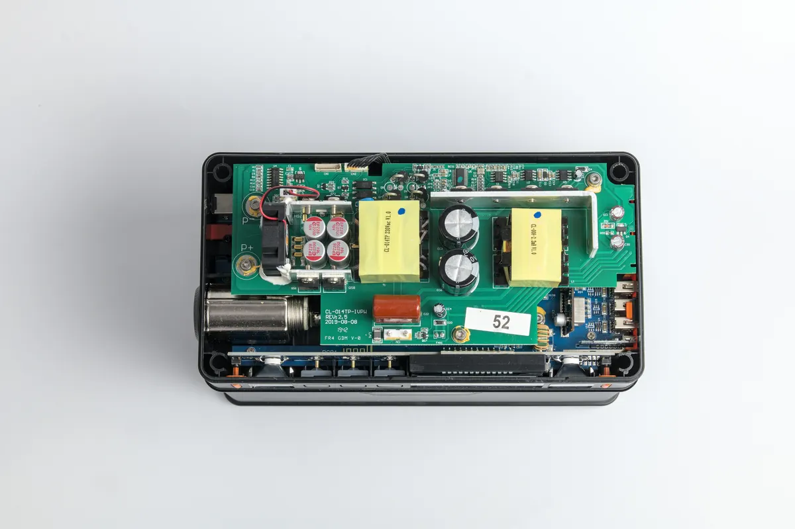

Cómo analizamos y qué no hacemos
Una web que gana dinero recomendando productos tiene que explicar cómo decide. Esta página es el contrato con quien nos lee.
Cómo puntuamos una estación de energía
La nota sobre 10 sale de cinco criterios con peso fijo. El peso está decidido de antemano y es el mismo para todos los modelos:
| Criterio | Peso | Qué medimos |
|---|---|---|
| Coste por ciclo | 30 % | Precio dividido entre kilovatios-hora que la batería entregará durante toda su vida útil. |
| Potencia útil | 25 % | Salida continua y pico reales, y si arrancan cargas inductivas. |
| Capacidad y ampliación | 20 % | Vatios-hora y si admite baterías adicionales. |
| Movilidad | 15 % | Peso, formato y asas, penalizando por vatio-hora transportado. |
| Carga y software | 10 % | Velocidad de carga, entrada solar máxima, calidad de la aplicación y función UPS. |
Filtro previo: solo entran modelos con batería LiFePO4 y BMS con protecciones documentadas. Una estación de iones de litio NMC puede ser buena para uso esporádico, pero su coste por ciclo la deja fuera de nuestras recomendaciones.
La fórmula de la calculadora
La calculadora no inventa nada, aplica cuatro operaciones encadenadas:
- Consumo diario: suma de vatios de cada aparato multiplicados por sus horas reales de funcionamiento. En el frigorífico pedimos horas de compresor en marcha, no horas enchufado, porque un compresor trabaja entre el 40 % y el 60 % del tiempo.
- Batería necesaria: consumo diario × días de autonomía ÷ (0,90 × 0,85). El 0,90 es la descarga útil que admite el LiFePO4 sin penalizar su vida; el 0,85 es el rendimiento típico de un inversor de onda senoidal pura incluyendo pérdidas de cableado.
- Panel necesario: consumo diario ÷ (horas de sol pico × 0,75). El 0,75 cubre pérdidas del regulador MPPT, temperatura de la célula y orientación no ideal, que es la situación normal en un techo de furgoneta.
- Pico de potencia: el aparato de mayor consumo con horas asignadas. Si supera la salida continua del modelo recomendado, la calculadora avisa.
Límite honesto de la herramienta. Es una calculadora de dimensionado, no una medición. Los consumos son valores medios; el de tu frigorífico concreto puede desviarse un 30 %. Si vas a gastar más de mil euros, mide tu instalación con un vatímetro o un monitor de batería antes de comprar.
Horas de sol pico que usamos
Las cifras de radiación proceden del atlas europeo PVGIS de la Comisión Europea. Redondeamos a la baja: preferimos que te sobre panel a que te falte en enero.
- Verano, sur de España: 6 horas de sol pico.
- Verano, norte y Cantábrico: 4,8.
- Media anual: 4. Es la opción por defecto y la que recomendamos para dimensionar.
- Invierno, sur: 3. Invierno, norte: 2.
Cómo nos financiamos y qué implica
Estacionportatil se financia con comisiones de afiliación: cuando compras a través de nuestros enlaces, la tienda nos paga un porcentaje y tú pagas exactamente el mismo precio. Para que eso no contamine el contenido aplicamos tres reglas:
- Las puntuaciones se cierran antes de comprobar qué programa de afiliación paga mejor.
- Incluimos modelos sin programa de afiliación disponible si son los mejores de su categoría, aunque no nos den ningún ingreso.
- Los inconvenientes de cada producto se escriben siempre, y en la misma pantalla que el botón de compra. Un análisis sin apartado «en contra» es publicidad.
Todos los enlaces monetizados llevan el atributo rel="sponsored", tal como exige Google, y están identificados con un aviso visible. Puedes leer el detalle en la política de afiliación.
Corrección de errores
Las especificaciones cambian y a veces hay errores. Si detectas uno, escríbenos a y lo corregimos indicando la fecha. No borramos errores en silencio.